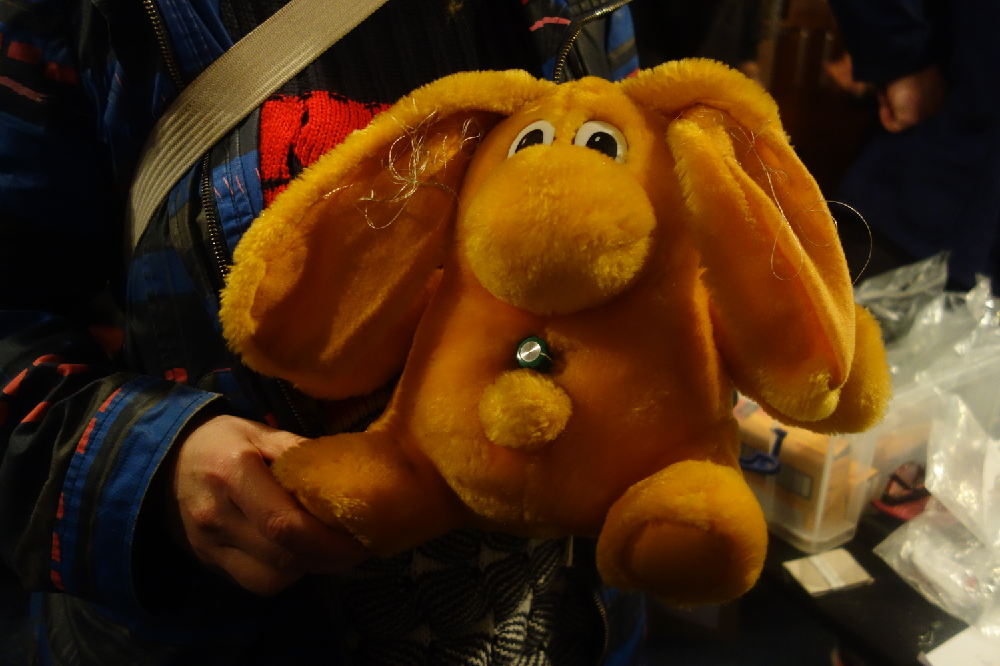
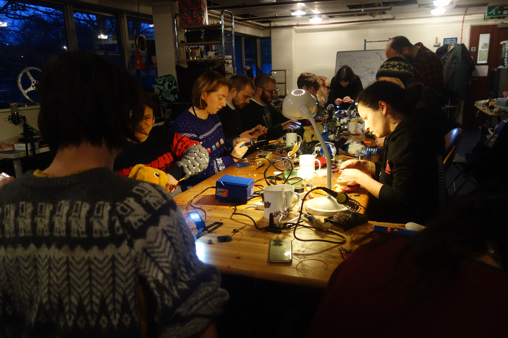
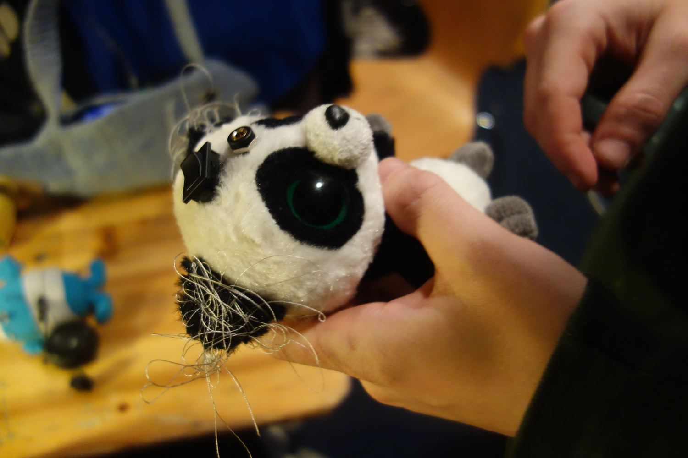
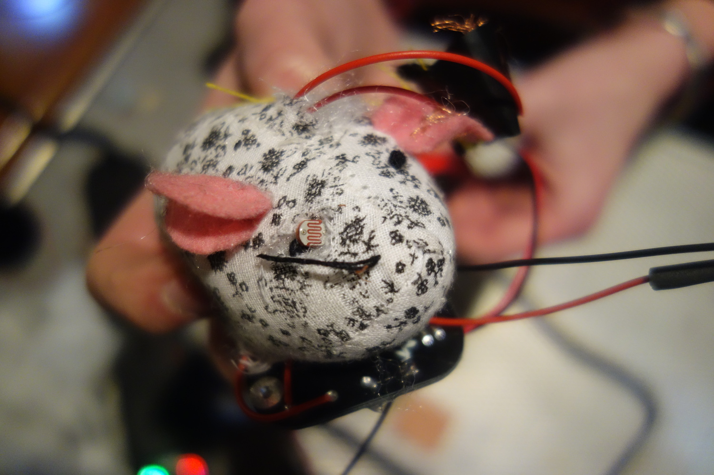
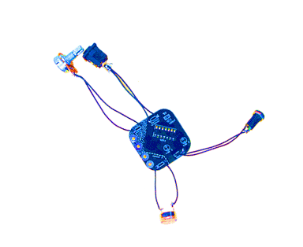
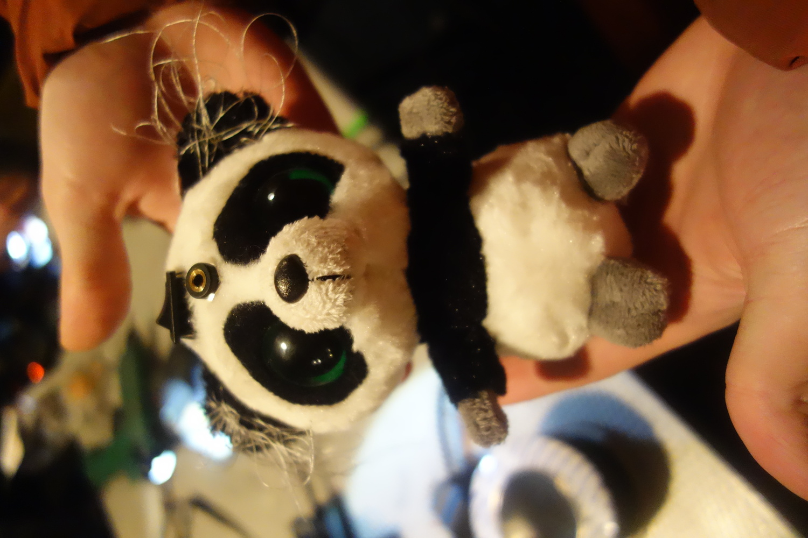
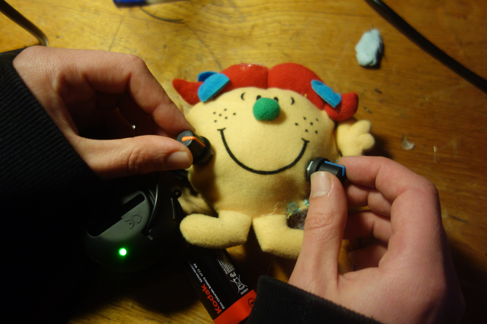

PRRRRRT is a collaboration with sound artist Kathy Hinde and synth maker Jasmine Butt. We design low cost micro-synthesizers (noise makers), that can be built by beginners, and we offer a simple hacking workshop where participants can assemble them. Our aim is to make DIY electronic music more accessible and to have fun making.


Our baby board, the “Nom Nom Nand Nor”, is a 4xNAND gate synth using a 4093 chip. By adding sensors, and combining with e-textiles, this simple synth is designed to become a light responsive or tactile musical instrument housed inside a soft toy, customised to each person’s creative choices. We ran the first NNNN workshop at BEEF winter school.
Please get in touch if you are interested in hosting one of our workshops.







